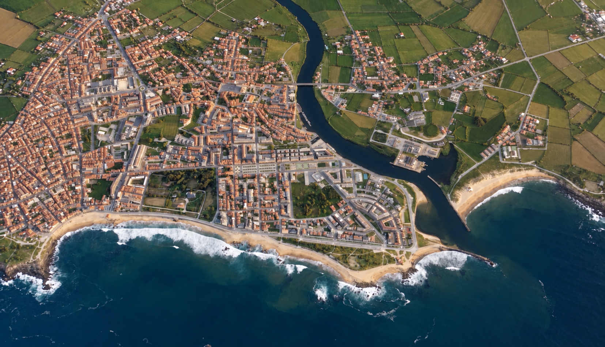

{{ p.sym }}
{{ p.nome }}
{{ e.sym }}
{{ e.nome }}
VILA DO CONDE
360
º
Mapa
Programa
Passaporte
App
▶
Rever vídeo
{{ iconeMusica }}
{{ textoMusica }}
{{ dica }}
A cidade é o palco.
{{ c.sym }}
{{ c.num }}
{{ c.nome }}
{{ c.estado }}
← Mapa
{{ tituloPercurso }}
{{ passo }}
{{ rolaDica }}
{{ fichaSym }}
{{ fichaSym }}
{{ fichaSym }}
{{ fichaKicker }}
×
{{ fichaNome }}
{{ fichaTexto }}
Programa
a anunciar
Passaporte
40 pontos
{{ fichaBotao }}
→
Vila do Conde
360
º
Toca para entrar
→
Saltar